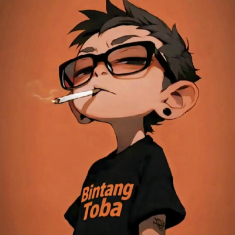

Bintang Toba

Hello there,
I am an undergraduate Electrical Engineering student at Universitas Pembangunan Panca Budi, with a particular interest in advanced electronic systems and high-current electrical applications. Through my studies, I continue to strengthen my understanding of electronic system design, electrical analysis, optimisation, and the practical application of technology.
Beyond my academic work, I independently develop browser-based productivity tools and automation scripts using Tampermonkey. This experience allows me to combine engineering principles with software development to create practical, efficient, and user-oriented solutions.
Outside of academics and technology, I enjoy exploring philosophy and financial markets. Philosophy offers valuable frameworks for clear and thoughtful decision-making, while financial markets deepen my appreciation of risk, uncertainty, and global dynamics. I also have a strong interest in competitive gaming and am an enthusiastic One Piece fan.
Looking ahead, I aspire to continuously develop my technical expertise, broaden my professional experience, and bring together engineering, software, and analytical thinking to create meaningful solutions that deliver lasting value.
Halo,
Saya adalah mahasiswa S1 Teknik Elektro di Universitas Pembangunan Panca Budi dengan minat khusus pada sistem elektronika tingkat lanjut dan penerapan kelistrikan arus besar. Melalui pendidikan yang saya jalani, saya terus memperkuat pemahaman mengenai perancangan sistem elektronika, analisis kelistrikan, optimasi, serta penerapan teknologi secara nyata.
Di luar kegiatan akademis, saya secara mandiri mengembangkan berbagai alat bantu produktivitas dan skrip otomatisasi berbasis peramban menggunakan Tampermonkey. Pengalaman tersebut memungkinkan saya memadukan prinsip-prinsip rekayasa dengan pengembangan perangkat lunak untuk menghasilkan solusi yang praktis, efisien, dan berorientasi pada kebutuhan pengguna.
Di luar bidang akademis dan teknologi, saya memiliki ketertarikan pada filsafat dan pasar keuangan. Bagi saya, filsafat memberikan kerangka berpikir yang jernih dan bijaksana dalam mengambil keputusan, sedangkan pasar keuangan memperluas pemahaman saya mengenai risiko, ketidakpastian, dan dinamika global. Saya juga memiliki minat pada permainan kompetitif serta merupakan penggemar One Piece.
Ke depannya, saya berkomitmen untuk terus mengembangkan keahlian teknis, memperluas pengalaman profesional, serta memadukan bidang rekayasa, perangkat lunak, dan pemikiran analitis untuk menciptakan solusi yang bermakna dan memberikan nilai berkelanjutan.